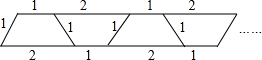
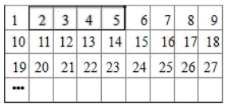
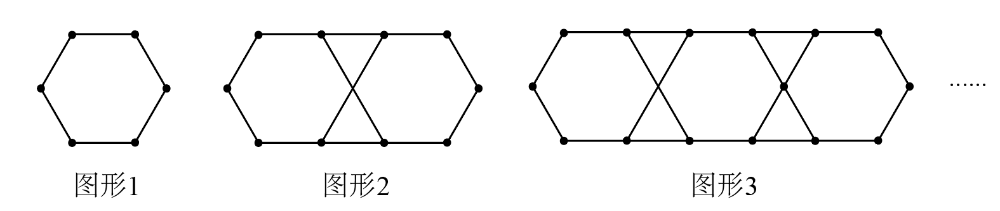
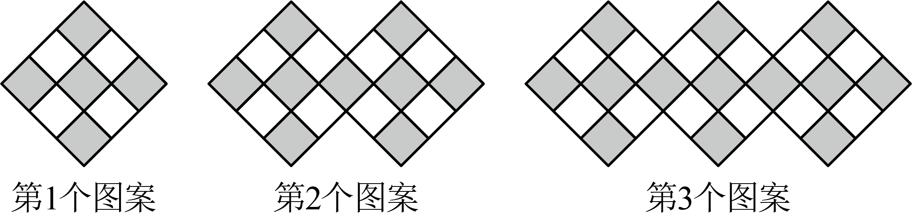
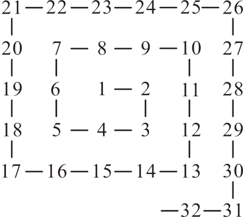
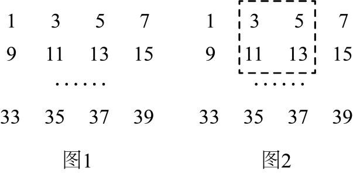
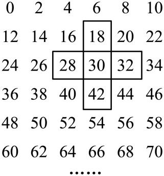
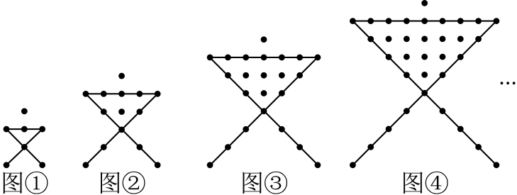
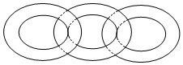
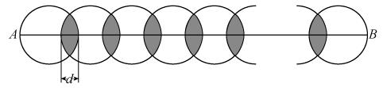

专题03 整式中的数式规律（举一反三专项训练）
【北师大版2024】

【题型1 探索数字中的排列规律】 1
【题型2 探索代数式中的排列规律】 3
【题型3 探索等式中的排列规律】 5
【题型4 探索表格中的排列规律】 7
【题型5 探索数阵中的排列规律】 12
【题型6 探索点（类似点）的个数排列规律】 15
【题型7 探索图形个数的排列规律】 18
【题型8 通过计算探索图形的排列规律】 20

【题型1 探索数字中的排列规律】
【例1】（24-25七年级上·全国·期中）观察下列一组数： a1=13， a2=35， a3=59， a4=717， a5=933，…，它们是按一定规律排列的，请利用其中规律，写出第n个数an= ．（用含n的式子表示）
【答案】2n−12n+1
【分析】本题主要考查整式里数字类的规律题，根据题意先观察分子和第n个数之间关系为2n−1，再观察分母和第n个数之间关系为2n+1，即可得到答案；
【详解】解：a1=13，
当n=1时，1=2×1−1，3=2+1；
a2=35，
当n=2时，3=2×2−1，5=2×2+1=22+1；
a3=59，
当n=3时，5=2×3−1，9=2×2×2+1=23+1；
a4=717，
当n=4时，7=2×4−1，17=24+1；
a5=933，
当n=5时，9=2×5−1，33=25+1；
∴当当n=n时，分子=2n−1，分母=2n+1；
∴an=2n−12n+1；
故答案为：2n−12n+1
【变式1-1】（24-25七年级上·吉林·阶段练习）观察下列一组数：−2，4，−8，16，−32，64，…，请根据你发现的规律写出这组数的第n个数为 （用含n的代数式表示）．
【答案】−1n2n
【分析】本题考查数字类规律探究，观察可知，奇数位数字为负，偶数位数字为正，每个位置的数字的绝对值为2n，即可得出结果．
【详解】解：观察可知：这组数的第n个数为−1n2n；
故答案为：−1n2n．
【变式1-2】（24-25七年级上·湖北孝感·期中）观察下面一列数：34，89，1516，2425，…，按照这个规律，第6个数应该是 ．
【答案】4849
【分析】本题考查数字类规律探索．观察可得：第n个数的分母为n+12，分子比分母小1，由此得出规律即可求解．
【详解】解：观察可得，当n为正整数时，第n个数为n+12−1n+12，
则第6个数为：6+12−16+12=4849，
故答案为：4849．
【变式1-3】（24-25七年级上·广东东莞·期中）仔细观察下列三组数
第一组： 1，4，9，16，25， …
第二组： −2，−4，−6，−8，−10，…
第三组： −1，0，3，8，15，…
解答下列问题：
(1)每一组的第6个数分别是_____，______，_____；
(2)分别写出各组的第n个数_____，_____，_____；
(3)取每组数的第10个数，计算它们的和．
【答案】(1)36，−12，24
(2)n2,−2n,n2−2n
(3)160
【分析】本题考查了数字规律探究题，有理数的混合运算，找到规律是解题的关键；
（1）第一组是连续的正整数的平方，第二组是连续的正整数乘以−2，第三组数据是第一组和第二组对应数据的和，据此求得每一组第6个数，即可求解．
（2）根据（1）的规律，即可求解；
（3）根据题意列式计算，即可求解．
【详解】（1）解：依题意，每一组的第6个数分别是62 =36，6×−2=−12，36−12=24，
故答案为：36，−12，24．
（2）解：各组的第n个数分别为n2,−2n,n2−2n，
故答案为：n2,−2n,n2−2n．
（3）解：每组数的第10个数，分别为100,−20,80，
其和为100−20+80=160．
【题型2 探索代数式中的排列规律】
【例2】观察多项式x−3x2+5x3−7x4+⋯的构成规律，则：
（1）它的第5项是 ；
（2）当x=1时，多项式前100项的和为 ．
【答案】 9x5 −100
【分析】本题考查多项式中的规律探究．解题的关键是得到多项式按照x的升幂排列，第n项为−1n−1⋅2n−1xn．
（1）由多项式的构成，可知第n项为−1n−1⋅2n−1xn，进而得到第5项即可；
（2）当x=1时，得到和为：1−3+5−7+⋯+197−199，进行计算即可．
【详解】解：（1）由题意，可知：多项式按照x的升幂排列，第n项为−1n−1⋅2n−1xn，
∴它的第5项是−14⋅9x5=9x5；
故答案为：9x5；
（2）当x=1时，多项式前100项的和为
1−3+5−7+⋯+197−199
=1+5+9+⋯+197−3+7+11⋯+199
=502×1+197−502×3+199
=502×1+197−3−199
=502×−4
=−100．
故答案为：−100．
【变式2-1】（24-25八年级上·云南文山·期末）按一定规律排列的单项式：−x，3x2，−5x3，7x4，−9x5⋯，第2025个单项式是（ ）
A．4047x2024 B．−4049x2025 C．−2023x2024 D．2025x2025
【答案】B
【分析】本题考查了数字类规律变化问题，由已知数列可得单项式的系数规律为−1n·2n−1，指数的规律为n，据此解答即可求解，由已知数列找到变化规律是解题的关键．
【详解】解：∵单项式：−x，3x2，−5x3，7x4，−9x5⋯，
∴单项式的系数规律为−1n·2n−1，指数的规律为n，
∴第2025个单项式是−12025·2×2025−1x2025=−4049x2025，
故选：B．
【变式2-2】有一组按规律排列的多项式：a−b，a2+b3，a3−b5，a4+b7，…，则第2023个多项式是（ ）
A．a2023+b4047 B．a2023−b4047 C．a2023+b4045 D．a2023−b4045
【答案】D
【分析】把已知的多项式看成由两个单项式组成，分别找出两个单项式的规律，也就知道了多项式的规律．
【详解】解：多项式的第一项依次是a，a2，a3，a4，…，an，
第二项依次是−b，b3，−b5，b7，…，(−1)nb2n−1，
得到第n个式子是：an+−1nb2n−1．
当n=2023时，多项式为a2023−b4045
故选：D．
【点睛】此题主要考查了多项式，本题属于找规律的题目，把多项式分成几个单项式的和，分别找出各单项式的规律是解决这类问题的关键．
【变式2-3】（24-25七年级上·山东聊城·期末）观察下面一组单项式：−32x2y，54x4y2，−78x6y3，916x8y4，⋯根据其中的规律，得出第n个单项式是 ．
【答案】−1n2n+12nx2nyn
【分析】本题考查的是单项式的规律探究，从符号规律可得以−，+循环，可以用−1n表示，系数的分子是奇数，可以用2n+1表示，系数的分母是2的正整数指数幂，可以用2n表示，x的指数是偶数，可以用2n表示，y的指数是正整数，可以用n表示，从而可得答案．
【详解】解：∵一组单项式：−32x2y，54x4y2，−78x6y3，916x8y4，…
∴从符号规律可得以−，+循环，可以用−1n表示，
∴系数的分子是奇数，可以用2n+1表示，系数的分母是2的正整数指数幂，可以用2n表示，
∴x的指数是偶数，可以用2n表示，y的指数是正整数，可以用n表示，
∴得出第n个单项式是(−1)n2n+12nx2nyn；
故答案为：(−1)n2n+12nx2nyn．
【题型3 探索等式中的排列规律】
【例3】（24-25六年级上·山东烟台·期末）观察以下各个等式的规律：第一个等式：22−12−12=1，第二个等式：32−22−12=2，第三个等式：42−32−12=3，……，请用上述等式反映出的规律，猜想第n个等式为（用含n的代数式表示） ．
【答案】n+12−n2−12=n
【分析】本题考查数字规律探索．仔细分析所给等式可知：等号左边的式子规律是分母始终为2，分子是序号加1的平方与序号的平方的差减1，等号右边为序号，即可得到答案．
【详解】解：第一个等式为22−12−12=1，
第二个等式为32−22−12=2，
第三个等式为42−32−12=3，
……
∴第n个等式为n+12−n2−12=n，
故答案为：n+12−n2−12=n．
【变式3-1】观察：3×5+1=16=42；你发现了什么规律？根据你发现的规律，请你用含一个字母的等式将上面各式呈现的规律表示出来．
【答案】当n≥2且n为整数时，n−1n+1+1=n2
【分析】规律为：两个相差2的数的积加上1，等于这两个数的平均数的平方．
【详解】通过3×5+1=16=42，观察可以发现：
当n≥2且n为整数时，n−1n+1+1=n2
故答案为：当n≥2且n为整数时，n−1n+1+1=n2．
【点睛】本题考查数字变化规律，解题的关键是观察积的两个数之间的关系，结果与这两个数的关系．
【变式3-2】观察下列顺序排列的等式：
9×0+2=2，
9×1+3=12，
9×2+4=22，
9×3+5=32，
猜想第 n 个等式为 （用含有 n 的等式表示）．
【答案】9(n−1)+n+1=10n−1+2
【分析】根据数据所显示的规律可知：第一数列都是9，第2数列开始有顺序且都是所对序号的数减去1，加号后的数是所对序号的数加上1，等号右端是10n−1+2的规律，所以第n个等式(n为正整数)应为9(n−1)+n+1=10n−1+2．
【详解】解：根据题中的规律，可得第n个式子是9(n−1)+n+1=10n−1+2．
故答案为：9(n−1)+n+1=10n−1+2．
【点睛】本题主要考查了学生通过特例分析从而归纳总结出一般结论的能力．对于找规律的题目首先应找出哪些部分发生了变化，是按照什么规律变化的．通过分析找到各部分的变化规律后直接利用规律求解．
【变式3-3】观察下列等式：
第1个等式：22−02=4×1，
第2个等式：32−12=4×2，
第3个等式；42−22=4×3，
第4个等式：52−32=4×4，
……
根据上述规律，第n个等式为 ．
【答案】n+12−n−12=4n
【分析】本题是一道找探索数字等式变化规律的题目，观察题目中给出的四个等式，可得出第5个等式为62−42=4×5，以此类推即可得出第个等式．解题的关键是首先要观察、分析、归纳总结出规律，在归纳总结规律时，要特别注意哪些部分发生了变化，是按照什么规律变化的，哪些部分没有发生变化．
【详解】解：∵第1个等式：22−02=4×1，
第2个等式：32−12=4×2，
第3个等式；42−22=4×3，
第4个等式：52−32=4×4，
∴第5个等式为62−42=5×4，
……
以此类推，第n个等式为：n+12−n−12=4n．
故答案为：n+12−n−12=4n．
【题型4 探索表格中的排列规律】
【例4】观察由等腰梯形组成的下图和所给表中数据的规律后回答问题：

梯形个数 | 1 | 2 | 3 | 4 | 5 | .... |
图形周长 | 5 | 8 | 11 | 14 | 17 | ..... |
当等腰梯形个数为2006时，图形的周长为（ ）
A．2007 B．8026 C．6017 D．6020
【答案】D
【分析】观察图形可知，每增加1个梯形，则周长增加3，然后写出n个梯形时的图形的周长，再把n为2006代入表达式进行计算即可得解．
【详解】解：梯形个数为1，图形周长为5=3×1+2，
梯形个数为2，图形周长为8，8=3×2+2，
梯形个数为3，图形周长为11，11=3×3+2，
梯形个数为4，图形周长为：14=3×4+2，
梯形个数为5，图形周长为：17=3×5+2，
…，
依此类推，梯形个数为n，图形周长为：3n+2，
所以，当n为2006时，3×2006+2=6020，
故选：D．
【点睛】本题考查了图形变化规律，根据图形以及表格数据，判断出每增加1个梯形，则周长增加梯形的一个上底与下底的和，即3，是解题的关键．
【变式4-1】将正整数按如图的规律排列：平移表中的方框，方框中的4个数的和可能是（ ）

A．2010 B．2014 C．2018 D．2022
【答案】A
【分析】设第二个为x,则第一个,第三个,第四个分别为:x-1,x+1,x+2,总和为:4x+2,分别令代数式为:2010,2014,2018,2022,算出x再判断.
【详解】解: 设第二个为x,则第一个,第三个,第四个分别为:x-1,x+1,x+2,总和为:4x+2.
当4x+2=2010时,x=502,则x-1=501;
当4x+2=2014时,x=503,则x-1=502;
当4x+2=2018时,x=504,则x-1=503;
当4x+2=2022时,x=505,则x-1=504;
由图可知每行有9个数,
∵504÷9=56,可以除尽
故504为某行的最后一位.表格如下:
496 | 497 | 498 | 499 | 500 | 501 | 502 | 503 | 504 |
505 | 506 | 507 | 508 | 509 | 510 | 511 | 512 | 513 |
由图可知:501+502+503+504=2010满足题意.
故选A.
【点睛】本题考查找规律的能力,关键在于通过图形找出四个相连数的关系列出方程.
【变式4-2】（24-25七年级上·辽宁大连·期中）用相同的小木棒按如图方式拼成图形．

(1)按图形规律完成下表：
图形 | 1 | 2 | 3 | 4 | … |
所用木棒根数 | 6 | 14 | 22 | a | … |
表中的a= ；按这种方式拼下去，第n个图形需要 根小木棒（用n的代数式表示）；
(2)第100个图形需要用多少根小木棒?
(3)小明同学说他按这种方式拼出来的一个图形共用了2024根小木棒，你认为可能吗?如果可能，那是第几个图形?如果不可能，请说明理由．
【答案】(1)30；8n−2
(2)第100个图形需要用798根小木棒
(3)不可能，理由见解析
【分析】本题考查图形类规律探究、解一元一次方程，关键是找出前后两个图形的变化规律．
（1）根据前后两个图形相差8个小木棒可完成表格；
（2）根据（1）所得规律即可得到答案；
（3）根据（1）中所得规律列方程求解即可．
【详解】（1）解：第1个图形需要6=8−2个小木棒，
第2个图形需要14=2×8−2个小木棒，
第3个图形需要22=3×8−2个小木棒，
……，
以此类推，可知，第n个图形需要8n−2个小木棒，
∴第4个图形需要4×8−2=30个小木棒，即a=30,
故答案为：30，8n−2；
（2）解：当n=100时，8n−2=8×100−2=798，
∴第100个图形需要用798根小木棒；
（3）解：不可能， 理由如下：
当8n−2=2024，
解得n=253.25，
∵n是正整数，
∴n=253.25不合题意．
∴小明的说法是错误的，
∴是不可能的．
【变式4-3】（24-25七年级上·广东东莞·期中）观察：用火柴棒按下列方式搭建三角形：

问题：当三角形的个数为n时，火柴棒的根数是多少？下面是四个同学的发现：根据小明的发现：从第二个图形起，与前一图形相比，增加2根火柴棒，可得：
三角形个数 | 1 | 2 | 3 | 4 | |
火柴棒根数 | 3 | 3+2 | 3+2+2 | 3+2+2+2 | … |
根据小旭的发现：每个三角形由三根火柴棒组成，从第一个三角形起，火柴棒根数等于所含三角形的个数乘以3再减去重复的火柴棒根数，可得：
三角形个数 | 1 | 2 | 3 | 4 | … |
火柴棒根数 | 1×3 | 2×3−1 | 3×3−2 | 4×3−3 | … |
根据小晗的发现：观察火柴棒的根数与三角形个数的对应关系，可得：
三角形个数 | 1 | 2 | 3 | 4 | … |
火柴棒根数 | 3=1×2+1 | 5=2×2+1 | 7=3×2+1 | … |
根据小亮的发现：把组成图形的火柴棒分为“横”放和“斜”放，可得：
三角形个数 | 1 | 2 | 3 | 4 | … |
火柴棒根数 | 1+2 | 2+3 | 3+4 | 4+5 | … |
(1)请根据小晗同学的发现，在“4”下面的表格中按规律填写______．
(2)当三角形的个数为n时，火柴棒的根数是______（用含n的整式表示）；
(3)当图形中含有2024个三角形时，需要多少根火柴棒？
(4)有了解决上述问题的经验，解决下面这个问题：如图所示是一组有规律的图案，它们是由边长相同的小正方形组成，其中部分小正方形涂有阴影按照这样的规律，第n个图案中有4425个涂有阴影的小正方形，求n的值．

【答案】(1)9=4×2+1
(2)2n+1根
(3)4049根
(4)1106
【分析】本题主要考查了图形变化的规律，能根据所给图形发现所需火柴棒及阴影小正方形的个数是解题的关键．
（1）根据小晗的发现，将表格补充完整即可．
（2）根据表格中所给数据，发现规律即可解决问题．
（3）根据（2）中发现的规律即可解决问题．
（4）根据所给图形，依次求出图形中阴影小正方形的个数，发现规律即可解决问题．
【详解】（1）解：根据小晗的发现可知，
当三角形个数为4时，火柴棒根数为：9=4×2+1；
故答案为：9=4×2+1．
（2）解：由题知，
当三角形个数为1时，火柴棒根数为：3=1+2；
当三角形个数为2时，火柴棒根数为：5=2+3；
当三角形个数为3时，火柴棒根数为：7=3+4；
…，
所以当三角形个数为n时，火柴棒根数为2n+1根．
故答案为：2n+1根．
（3）解：由（2）知，当n=2024时，2n+1=4049（个），
即当图形中含有2024个三角形时，需要4049根火柴棒．
（4）解：由所给图形可知，
第1个图案中，涂由阴影的小正方形个数为：5=1×4+1；
第2个图案中，涂由阴影的小正方形个数为：9=2×4+1；
第3个图案中，涂由阴影的小正方形个数为：13=3×4+1；
…，
所以第n个图案中，涂由阴影的小正方形个数为4n+1个．
令4n+1=4425，
解得n=1106，
即第1106个图案中有4425个涂有阴影的小正方形．
故答案为：1106．
【题型5 探索数阵中的排列规律】
【例5】（24-25七年级上·江苏南京·阶段练习）将正整数从1开始按如图所示的规律排成一个数阵，其中，2在第一个拐弯处，3在第二个拐弯处，5在第三个拐弯处，7在第四个拐弯处，…，则第2025个拐弯处的数是 ．

【答案】1026170
【详解】本题考查数字的变化规律，观察图表中每个拐弯处的数字，依次得到每个拐弯处的数与第n个拐弯的关系；将每个拐弯处的数字分别表示为第1个拐弯：1+1=2，第2个拐弯：1+1+1=3，第3个拐弯：1+1+1+2=5；结合2025=2×1012+1，即可求出在第2025个拐弯处的数．
解：观察图表，可知
第1个拐弯：1+1=2，
第2个拐弯：1+1+1=1+1×2=3，
第3个拐弯：1+1+1+2=1+1×2+2=5；
第4个拐弯：1+1+1+2+2=1+（1+2）×2=7；
第5个拐弯：1+1+1+2+2+3=1+（1+2）×2+3=10；
第6个拐弯：1+1+1+2+2+3+3=1+（1+2+3）×2=13；
第7个拐弯：1+1+1+2+2+3+3+4=1+（1+2+3）×2+4=17；
…
∵2025=2×1012+1，
∴第2025个拐弯处的数是1+（1+2+3+…+1012）×2+1013=1026170．
故答案为：1026170．
【变式5-1】将连续的奇数1，3，5，7，9，…，39，排成如图1所示的数阵．

(1)如图2，求方框中四个数的平均数；
(2)如果用方框任意圈住四个数，设方框左上角的数为a．求方框中四个数的和（用含a的代数式表示）．
【答案】(1)8
(2)4a+20
【分析】本题考查了规律型：数字的变化类，列代数式，解决本题的关键是根据题意列出代数式．
（1）根据平均数的定义进行计算即可；
（2）用含a的代数式表示方框中四个数，然后求和即可解决问题．
【详解】（1）解：3+5+11+134=8，
所以方框中四个数的平均数是8；
（2）解：设方框中四个数分别为a，a+2，a+8，a+10，
所以这四个数的和为：a+a+2+a+8+a+10=4a+20．
【变式5-2】（24-25七年级上·贵州六盘水·期末）将连续的偶数0，2，4，6，8，…排成如图所示的数阵，用十字框按如图所示的方式任意框5个数（十字框只能平移）．

(1)若框住的5个数中，中间数为30，则这5个数的和为______，设中间数为a，用含a的代数式表示十字框内5个数的和为______．
(2)十字框中的五个数之和能等于2026吗？若能，请求出中间数a；若不能，请说明理由．
【答案】(1)150；5a
(2)不能，理由见解析
【分析】主要考查一元一次方程的应用，规律型：数字的变化类，规律型的习题一般是从所给的数据和运算方法进行分析，从特殊值的规律上总结出一般性的规律．
（1）根据图示进行计算便可得结果，可得这5个数的和；用a表示出其余4个数，再求和即可；
（2）根据（1）中的代数式，结合题意列出a的方程，即可求解．
【详解】（1）解：由题意得，这5个数的和为：18+28+30+32+42=150，
设正中间的数为a，则其余4个数分别为a−12,a−2,a+2,a+12，
∴十字框内5个数的和为：a−12+a−2+a+a+2+a+12=5a，
故答案为：150；5a；
（2）解：不能，理由如下：
根据题意得，5a=2026，
解得，a=405.2，不是整数，
∴十字框中的五个数之和能等于2026．
【变式5-3】（24-25七年级上·福建泉州·期末）如图，正整数按以下数阵规律排列，则下列判断正确的有 ．（填入正确的判断序号）

（1）第⑥个数阵第6行第5列的数为30；
（2）第⑥个数阵新增的数和为341；
（3）第⑧个数阵第2行所有数和为158；
（4）第n个数阵所有数和为12n4．
【答案】（2）（3）
【分析】本题考查数字的变化类，解答本题的关键是明确题意，发现数字的变化特点．
根据图中的数字，正方形数列可以发现，第n个数阵有n2个数，每行的数字个数和每行中数字的排列顺序，从而可以得到每行每列的数，进而解答问题．
【详解】解：由图可知，第n个数阵有n2个数，其中第n行第1列的数是n2，第1行第n列的数是(n−1)2+1，第n行第n列的数是(n−1)2+n，
∴第6行的六个数分别是36，35，34，33，32，31，
故第6行第5列的数是32，故判断（1）错误；
第⑤个数阵所有数和=1+2+3+⋯⋯+25=25×(25+1)2=325
第⑥个数阵所有数和=1+2+3+⋯⋯+36=36×(36+1)2=666
第⑥个数阵新增的数和为=666−325=341，故判断（2）正确；
∵第⑧个数阵第1行的数字分别为：1，2，5，10，17，26，37，50，
∴第⑧个数阵第2行的数字分别为：4，3，6，11，18，27，38，51，
∴第⑧个数阵第2行所有数和为4+3+6+11+18+27+38+51=158，故判断（3）正确；
第n个数阵所有数和为1+2+3+…+n2=n2(n2+1)2，故判断（4）错误；
综上所述：判断正确的有（2），（3），
故答案为：（2）（3）．
【题型6 探索点（类似点）的个数排列规律】
【例6】（24-25七年级上·山西阳泉·期中）如图是一组有规律的图案，第1个图案中有4个基础图形，第2个图案中有7个基础图形，第12个图案中的基础图形个数为（ ）

A．35 B．36 C．37 D．38
【答案】C
【分析】本题主要考查了图形类的规律探索，观察可知后面一个图形比前面一个图形多3个基础图形，据此规律求解即可．
【详解】解：第1个图案中有4+1−1×3=4个基础图形，
第2个图案中有4+2−1×3=7个基础图形，
第3个图案中有4+3−1×3=10个基础图形，
第4个图案中有4+4−1×3=13个基础图形，
……，
以此类推，可知第n个图案中有4+3n−1=3n+1个基础图形，
∴第12个图案中的基础图形个数为3×12+1=37，
故选：C．
【变式6-1】如图是一组有规律的图案，第1个图案由5个基础图形组成，第2个图案由8个基础图形组成，……，如果按照以下规律继续下去，那么通过观察，可以发现：第20个图案需要（ ）个基本图形．

A．402 B．404 C．406 D．408
【答案】B
【分析】观察不难发现，第1个图案由12+4＝5个基础图形组成，第2个图案由22+4＝8个基础图形组成，以此类推再把20代入进行计算即可得解．
【详解】解：第1个图案由12+4＝5个基础图形组成，
第2个图案由22+4＝8个基础图形组成，
……，
如果按照以下规律继续下去，
可以发现：第20个图案需要202+4＝404个基本图形．
故选B．
【点睛】此题考查规律型：图形的变化类，解题关键在于理解题意找到规律.
【变式6-2】（24-25七年级上·四川成都·期末）如图是一组有规律的图案，第1个图案由3个基础图形组成，第2个图案由5个基础图形组成，…则第n（n是正整数）个图案由 个基础图形组成．

【答案】1+2n/2n+1
【分析】本题主要考查了图形变化规律问题，结合题意确定图形变化规律是解题关键．根据题意，分析图形变化规律，即可获得答案．
【详解】解：根据题意，第1个图案中基础图形个数为1+2×1=3个，
第2个图案中基础图形个数为1+2×2=3个，
第3个图案中基础图形个数为1+2×3=7个，
……，
所以，第n个图案中基础图形个数为1+2n个．
故答案为：1+2n．
【变式6-3】如图，是一组有规律的图案，第1个图案由6个基础图形组成，第2个图案由11个基础图形组成，……，第n(n是正整数)个图案中由 个基础图形组成．（用含n的代数式表示）

【答案】5n+1/1+5n
【分析】观察图形不难发现，后一个图形比前一个图形多5个基础图形，根据此规律写出第n个图案的基础图形个数即可．
【详解】解：第1个图案由6个基础图形组成，
第2个图案由11个基础图形组成，11=5×2+1，
第3个图案由16个基础图形组成，16=5×3+1，
…，
第n个图案由5n+1个基础图形组成．
故答案为：5n+1．
【点睛】本题是对图形变化规律的考查，观察图形得到后一个图形比前一个图形多5个基础图形是解题的关键．
【题型7 探索图形个数的排列规律】
【例7】（24-25七年级上·黑龙江牡丹江·期末）用黑色棋子摆出一组图形如图所示：按照这种规律摆下去，请写出第n个图形用的黑色棋子个数为 ．

【答案】n+12−1
【分析】本题主要考查了图形类规律探索，含乘方的有理数混合运算等知识点，从题中的图形中发现并总结出一般规律是解题的关键．
通过观察图形发现并总结出一般规律即可．
【详解】解：通过观察发现：
第1个图形用的黑色棋子个数为3=1+12−1，
第2个图形用的黑色棋子个数为8=2+12−1，
第3个图形用的黑色棋子个数为15=3+12−1，
第4个图形用的黑色棋子个数为24=4+12−1，
⋯⋯
∴第n个图形用的黑色棋子个数为n+12−1，
故答案为：n+12−1．
【变式7-1】（2025·贵州贵阳·二模）如图是用棋子摆成的“小房子”，按照这样的规律，摆第8个图形需要 枚棋子．

【答案】47
【分析】本题考查了图形类规律探索，找到规律是解题的关键；
根据前面几个图形中棋子的数量可得：第n个图形需要6n−1枚棋子，即可求解．
【详解】解：第1个图形需要5枚棋子，5=6×1−1，
第2个图形需要11枚棋子，11=6×2−1，
第3个图形需要17枚棋子，17=6×3−1，
第4个图形需要23枚棋子，23=6×4−1，
……
所以第n个图形需要6n−1枚棋子，
所以摆第8个图形需要47枚棋子；
故答案为：47．
【变式7-2】（2025·重庆·模拟预测）如图是一组蜂窝的结构，它是由若干个正六边形组合而成．第1个图案如图①有2个正六边形，第2个图案如图②有5个正六边形，第3个图案如图③有8个正六边形，第4个图案如图④有11个正六边形……，按此规律，第7个图案中正六边形的个数是（ ）

A．17 B．20 C．23 D．26
【答案】B
【分析】本题考查图形的变化类，解答本题的关键是明确题意，利用数形结合的思想解答．根据题目中的图形可以发现正六边形个数的变化规律，可以求得第n个图案中正六边形的个数，即可求第7个图案中正六边形的个数．
【详解】解：第1个图案如图①有2个正六边形，
第2个图案如图②有5个正六边形，
第3个图案如图③有8个正六边形，
第4个图案如图④有11个正六边形
······，
∴第n个图案有3n−1个正六边形，
∴第7个图案中正六边形的个数为：3×7−1=20，
故选：B．
【变式7-3】（24-25七年级上·福建漳州·期中）汉字文化源远流长，现在它以一种独特的方式融入了我们的日常消费生活．以下是一系列由相同大小的圆点和线段组成的图形，它们按照某种特定的规律排列，形成了篆书简化“文”字的形状．其中，图①中共有7个圆点，图②中共有14个圆点，图③中共有23个圆点，图④中共有34个圆点⋯，依此规律，则图⑧中共有圆点的个数是 ．

【答案】98
【分析】本题考查了图形的规律变化问题，由已知图形可得图n中共有n+22−2个圆点，据此解答即可求解，找到图形的变化规律是解题的关键．
【详解】解：∵图①中共有7=32−2个圆点，
图②中共有14=42−2个圆点，
图③中共有23=52−2个圆点，
图④中共有34=62−2个圆点，
⋯，
∴图n中共有n+22−2个圆点，
当n=8时，n+22−2=102−2=98，
∴图⑧中共有圆点的个数是98，
故答案为：98．
【题型8 通过计算探索图形的排列规律】
【例8】（24-25六年级上·山东烟台·期末）如图，某链条每节长为2.5 cm，每两节链条相连接部分重叠的圆的直径为0.8cm，则11节链条的长度为 cm．

【答案】19.5
【分析】本题主要考查了图形类规律探索，找到规律是解题的关键．根据题意，找出链条长度变化的规律即可求解．
【详解】解：1节链条时，链条的长度为2.5cm，
2节链条时，链条的长度为2.5+2.5−0.8=4.2，
3节链条时，链条的长度为2.5+2.5−0.8×2=5.9，
⋯
n节链条时，链条的长度为2.5+2.5−0.8n−1，
∴11节链条时，链条的长度为2.5+2.5−0.8×11−1=19.5．
故答案为：19.5．
【变式8-1】如图，每张小纸带的长为40cm，用胶水把它们粘贴成一张长纸带，接头粘贴重叠部分的长为3cm．则用20张这样的小纸带粘贴成的纸带的长度为 ．

【答案】743cm/743厘米
【分析】理解接头是每相邻两张有一个接头，则三张有两个接头，从而求出每张纸带的长度，则n张有n−1个接头，n张这样的小纸带粘贴成的纸带的长度是37n+3cm；据此即可求解．
【详解】解：由图形得，每相邻两张有一个接头，
三张有两个接头，
则n张有n−1个接头，
n张这样的小纸带粘贴成的纸带的长度是40n−3×n−1=37n+3cm；
当n=20时，37n+3=37×20+3=743cm．
∴20张这样的小纸带粘贴成的纸带的长度为743cm．
故答案为：743cm．
【点睛】本题考查了图形规律的探索，掌握题干数量关系并用代数式表示出来是解题关键．
【变式8-2】如图已知一个圆环内直径为4cm，外直径为5cm，将20个这样的圆环一个接一个环套成一条链条，那么这条铁链拉直后的长度为 cm．

【答案】81
【分析】根据图形即可得到规律：n个环连成的锁链拉直后的最大长度是（5-4）+4n=（4n+1）cm．
【详解】解：根据题意可知，1个圆环的最长长度是（5-4）+4=5（cm）；
2个圆环套成的链条拉直后的长度是（5-4）+4×2=9（cm）；
3个圆环套成的链条拉直后的长度是（5-4）+4×3=13（cm）；
…
20个圆环套成的链条拉直后的长度是（5-4）+4×20=81（cm）．
故答案为：81．
【点睛】本题考查了图形变化的规律，能根据图形变化的特点从特殊到一般找出内在的变化规律是解决问题的关键．
【变式8-3】如图所示，100个小圆形纸片按如图方式粘贴在一条直线上，相邻两个圆重叠部分最宽处是d（单位cm），若d是圆的直径的四分之一，则纸带的总长度AB为 cm．

【答案】301d
【分析】根据题意先计算2个圆重叠时，纸带的总长度为7dcm，有3个圆重叠时，纸带的总长度为10dcm，利用此数字变换的规律可表示出有100个圆重叠时，纸带的总长度为4d+994d−d．
【详解】解：∵d是圆的直径的四分之一，
∴圆的直径为4d(cm)，
∵有2个圆重叠时，纸带的总长度为4d+4d−d=7dcm，
有3个圆重叠时，纸带的总长度为4d+2×4d−d=10dcm，
有4个圆重叠时，纸带的总长度为4d+3×4d−d=13dcm，
……
∴有100个圆重叠时，纸带的总长度为4d+99×4d−d=301dcm．
故答案为：301d．
【点睛】此题考查了列代数式，解题的关键是正确分析题目中纸带长度和d之间的关系．